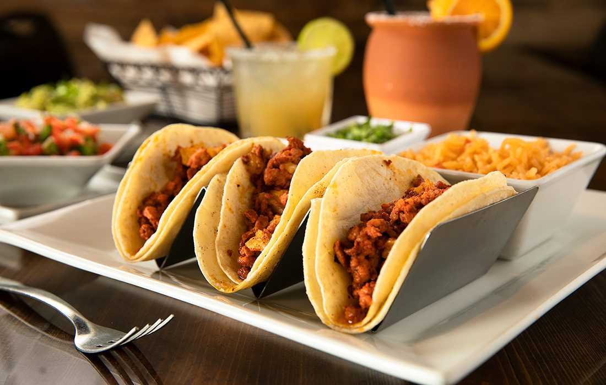

Tacos

A taco is a traditional Mexican food consisting of a small
hand-sized corn- or wheat-based tortilla topped with a
filling. The tortilla is then folded around the filling
and eaten by hand.
Ingredients
- 18 medium taco shells
- 2 lbs lean ground beef
- 1 bottle ketchup
- 1 package shredded cheese
- 1 large tomato
- 1 cup shredded lettuce
Steps
- Warm taco shells
- In a medium skillet over medium high heat, brown the beef.
Halfway through browning, pour in ketchup. Stir well and
let simmer for 5 minutes.
- Spoon the meat mixture into the warm taco shells
and top with Cheddar cheese.
- Return the filled taco shells to the preheated
oven and bake until cheese is melted.
- Top each taco with a little tomato and lettuce.